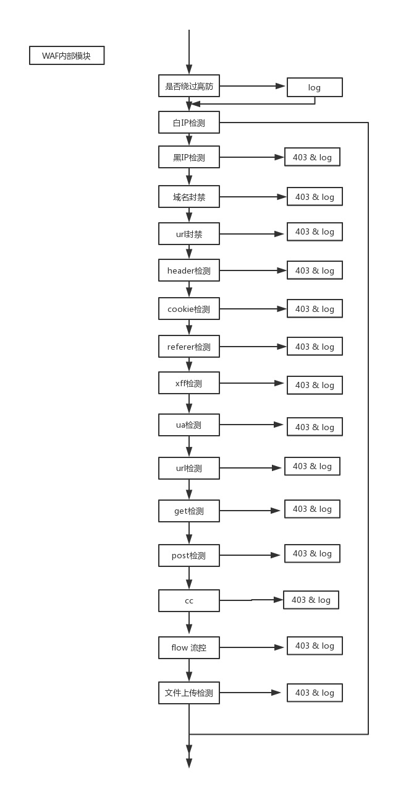

架构



技术选型
规则引擎
CC算法
if cc_policy then
local time = tonumber(util.split_str_table(cc_policy , ",")[1]) -- 单位时间
local times = tonumber(util.split_str_table(cc_policy , ",")[2]) -- 请求次数
local block_time = tonumber(util.split_str_table(cc_policy , ",")[3]) -- 封禁时间
local req, _ = ngx.shared.cc:get("cc_deny_"..host..real_ip)
if req then
_M.log_record("cc_module", 'cc_01', 'cc',
'cc','cc attack)
util.waf_output(block_template_cc)
end
end
local req_h, _ = ngx.shared.cc:get(host..real_ip)
if req_h then
if req_h >= times then
ngx.shared.cc:set("cc_deny_"..host..real_ip, "1", block_time*60)
_M.log_record("cc_module", 'cc_01', 'cc', 'cc','cc attack')
util.waf_output(block_template_cc)
else
ngx.shared.cc:incr(host..real_ip, 1)
end
else
ngx.shared.cc:set(host..real_ip, 1, time)
end
end
对域名的限流
local flow_max = tonumber(util.split_str_table(flow_rate, ",")[1]) -- qps
local block_time = tonumber(util.split_str_table(flow_rate, ",")[2]) -- 拦截时间
local req = ngx.shared.flow_control:get("flow_deny_"..host..real_ip)
if req then
_M.log_record("flow_module", 'flow_01',
'flow', 'flow',
'flow policy')
util.waf_output(block_template_flow)
end
end
local flow_count, _ = ngx.shared.flow_control:get(host)
if flow_count then
if flow_count>= flow_max then
ngx.shared.flow_control:set("flow_deny_"..host..real_ip, "1", block_time*60)
_M.log_record("flow_module", 'flow_01','flow', 'flow','flow policy')
util.waf_output(block_template_flow)
else
ngx.shared.flow_control:incr(host, 1)
end
else
ngx.shared.flow_control:set(host, 1, 1)
end
end
对IP的限流
flow_rate =ngx.shared.flow_ip_rules:get(ip_str_key) -- 单个IP 1s内最大请求数
if flow_rate then
local flow_count, _ = ngx.shared.flow_control:get('flow_ip'..host..real_ip)
if flow_count then
if flow_count>= tonumber(flow_rate) then
_M.log_record("flow_module", 'flow_ip_01','flow', 'flow_ip','flow policy')
util.waf_output(block_template_flow)
else
ngx.shared.flow_control:incr('flow_ip'..host..real_ip, 1)
end
else
ngx.shared.flow_control:set('flow_ip'..host..real_ip, 1, 1)
end
end